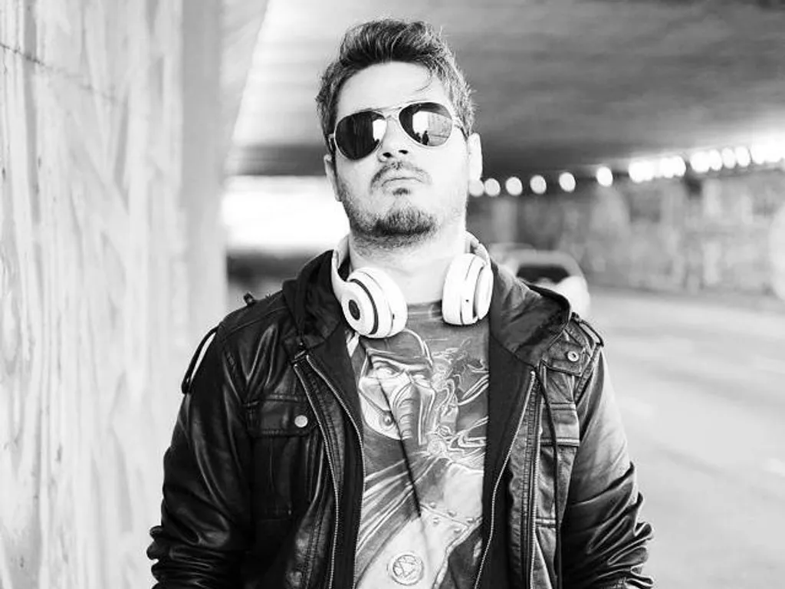

O Player Tauz é um dos principais nomes do rap geek no Brasil, conhecido por transformar universos de jogos, animes e filmes em músicas cheias de narrativa e emoção. Ele começou sua trajetória no YouTube por volta de 2013, em uma época em que o conteúdo voltado para cultura nerd ainda estava crescendo no país. Com o tempo, Tauz conquistou um público fiel ao unir batidas modernas com letras que exploram sentimentos, conflitos e histórias de personagens famosos. Grande parte do seu sucesso também está ligada a parcerias com o grupo 7 Minutoz, que ajudou a consolidar o rap geek como um gênero relevante no Brasil. Juntos, eles criaram músicas que viralizaram e marcaram uma geração de fãs de games e cultura pop. O diferencial de Tauz sempre foi sua capacidade de ir além de batalhas e ação, trazendo reflexões mais profundas dentro de universos fictícios.
Entre seus trabalhos mais conhecidos está o rap inspirado no jogo Minecraft. Nessa música, ele transforma elementos simples do jogo, como minerar, construir e sobreviver, em histórias envolventes. O mundo aberto e criativo de Minecraft permite que ele explore temas como evolução, persistência e superação, criando uma conexão forte com o público que já vivenciou essas experiências no jogo. O chamado Rap do Minecraft se destaca por combinar referências diretas ao gameplay com metáforas sobre a vida real. Ao falar sobre enfrentar monstros, construir abrigos e explorar o desconhecido, Tauz cria paralelos com desafios pessoais e crescimento individual. Isso faz com que suas músicas não sejam apenas sobre o jogo, mas também sobre a jornada de cada pessoa, o que ajuda a explicar o grande sucesso desse tipo de conteúdo.
Bem-vindo ao Minecraft, meu amigo
Na jornada desse game, ficará surpreendido
Sinta liberdade para poder criar
Apenas qualquer coisa que poder imaginar
Modo criativo ou sobrevivência
Em uma aventura, tenha sua experiência
Nem preciso dizer o que se pode ou não fazer
Faça o que quiser e verá acontecer
Construindo e minerando sem nenhuma trajetória
Sem ao menos perceber, vou fazendo minha história
Neste universo realmente impressionante
Explorando cavernas a procura de diamantes
Combinando itens, construindo casas
De dia ou de noite, fazendo minha jornada
Modificações aumentam a diversidade
E fica ainda mais legal com os amigos de verdade
Yeah, Minecraft, é
Você conhece!
Num mundo de blocos, faço qualquer criação
Onde o único limite é a imaginação
(Yeah!)
Minecraft, é
Você conhece!
Num mundo de blocos, faço qualquer criação
Onde o único limite é a imaginação
Yeah
Quando cai a noite, é preciso ter cuidado
Pode aparecer mobs por todo lado
Esqueleto, Zumbi, Aranha ou Creeper
Tenha coragem para invocar o Wither
Não olhe nos olhos de um Enderman
Assim como o Slender, te persegue também
Mas o que mais assusta é a lenda desse game
Herobrine, esse aí é diferente
Sua existência é um grande mistério
Tudo que se fala pode ou não estar correto
Realmente Minecraft é incomparável
Nunca nada semelhante tinha sido criado
Recorde de vendas, grande inspiração
Alcançando os da antiga e da nova geração
Vai falar de gráfico? Mano, dá um tempo
Ninguém nunca reclamou de jogar Super Nintendo!
Yeah, Minecraft, é
Você conhece
Num mundo de blocos, faço qualquer criação
Onde o único limite é a imaginação
(Yeah!)
Minecraft, é
Você conhece!
Num mundo de blocos, faço qualquer criação
Onde o único limite é a imaginação
Canal do Youtube: https://youtube.com/@tauz?si=X5eyVtry8AYIEroQ